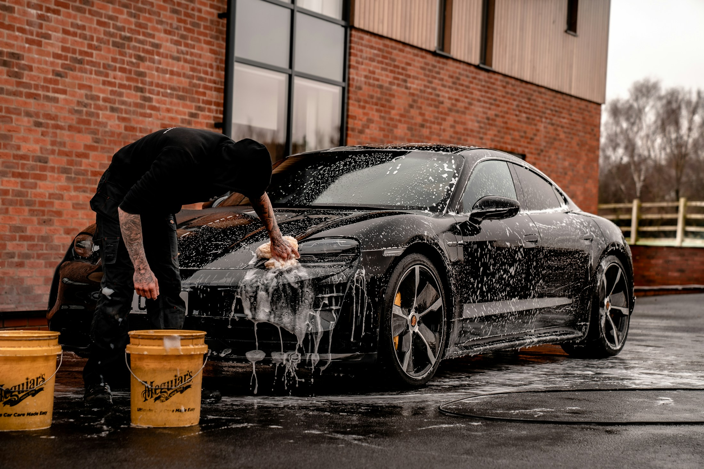
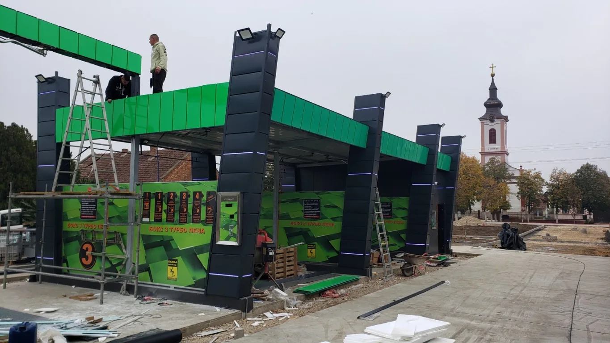
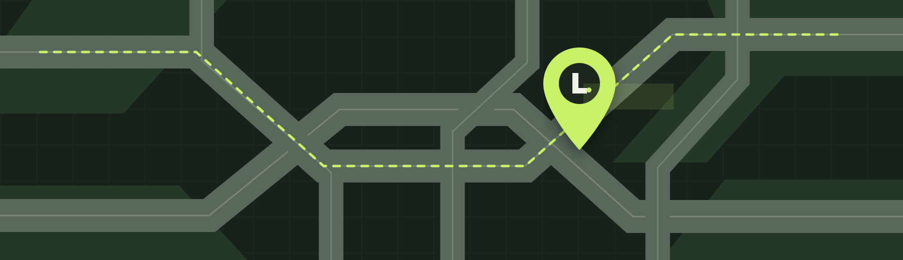

Open 24/7
Open every day of the year.

Wash your car yourself at Feniks in Novo Miloševo. Open every day, all day.
Novo Miloševo, Serbia Current conditions are unavailable.
Open every day of the year.
Each token gives 132 seconds of wash time.
You wash your own car.
Feniks car wash in Novo Miloševo.

Hours, price, address and answers to common questions.
Feniks is a family-run self-service car wash.
Maršala Tita 70, 23273 Novo Miloševo, Serbia.
Open the location in Google Maps.Every day, 24 hours a day.
One token costs 100 RSD and gives 132 seconds of wash time.
Tokens are available at the kiosk. You can pay with cash or a card.
Wash in this order: water, soap, water, wax, then a final rinse.
There are three wash bays, including one designated for larger vehicles. The wash supports vehicles from small cars to large tractors. Animals and non-motorized vehicles are not allowed.
The car wash remains operational during freezing weather. Please be mindful that the ground may be slippery outside the heated-floor bays.

FENIKS SELF-SERVICE CAR WASH
Maršala Tita 70